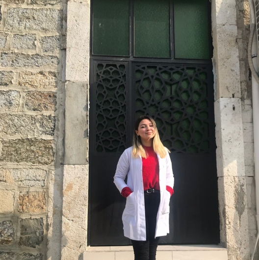

★★★★★
Paylaşım izni alınmış gerçek danışan geri bildirimi bu alana eklenecektir.
A**** K****
Danışan yakını
Ergoterapi; bireylerin günlük yaşamda karşılaştığı zorlukları aşmalarını, duyusal süreçlerini düzenlemelerini ve yaşam becerilerini geliştirmelerini destekleyen kişi odaklı bir sağlık disiplinidir.

Cansu Altun
Uzman Ergoterapist
Ergoterapi (İş ve Uğraşı Terapisi); anlamlı ve amaçlı aktiviteler aracılığıyla sağlığı, esenliği ve yaşam kalitesini geliştirmeyi hedefleyen kanıta dayalı bir sağlık mesleğidir.
Bireyin öz bakım, oyun, okul, iş ve serbest zaman aktivitelerinde bağımsızlığını sınırlandıran fiziksel, duyusal, bilişsel veya çevresel engelleri tespit ederek kişiye özel terapi stratejileri geliştirir.
Çevresel uyaranları algılama, düzenleme ve uygun adaptif yanıtlar oluşturma süreci.
El göz koordinasyonu, kalem tutma, düğme ilikleme ve denge kontrolü çalışmaları.
Odaklanma, problem çözme, planlama ve dürtü kontrolü geliştirme stratejileri.
Giyinme, beslenme, okul uyumu ve ev içi bağımsız rutinlerin kazanılması.
Merhaba, ben Cansu Altun. Lisans eğitimimi Ergoterapi bölümünde tamamlayarak mesleki çalışmalarımı çocukların ve gelişmekte olan bireylerin bütüncül gelişim süreçleri üzerine yoğunlaştırdım.
Mesleki pratiğimde her bireyin kendine özgü ihtiyaçları, güçlü yönleri ve gelişim ritmi olduğu yaklaşımını benimsiyorum. Değerlendirme ve terapi süreçlerini bireyin günlük yaşamına katılımını destekleyecek şekilde planlıyorum.
Terapi sürecinde çocukla yapılan çalışmaların yanı sıra aile, okul ve yakın çevreyle kurulan iş birliğini de önemsiyorum. Amacım, kazanılan becerilerin günlük yaşama aktarılabildiği sürdürülebilir bir destek süreci sunmaktır.
Bireyin ihtiyaçlarına duyarlı destekleyici yaklaşım.
Değerlendirmeye dayalı planlama süreci.
Aile ve yakın çevreyle düzenli iletişim.
Bireysel ihtiyaçlara yönelik özel olarak planlanan müdahale alanlarımız.
Duyusal hassasiyetleri, hareket korkusu veya aşırı hareketliliği olan çocuklarda duyusal işlemleme süreçlerini destekleyen özel oyun ortamı terapileri.
El kaslarının kuvvetlendirilmesi, nesne kavrama, makas kullanma, yazı yazma ve beden algısının güçlendirilmesine yönelik çalışmalar.
Okul öncesi ve ilkokul dönemindeki çocukların akademik, sosyal ve öz düzenleme becerilerinin değerlendirilip desteklenmesi.
Mesleki yetkinliğimi sürekli güncel tutan ulusal ve uluslararası eğitim programları.
Duyusal işlemleme bozukluklarının değerlendirilmesi ve müdahale kursları.
Standardize gelişim ve motor testlerin uygulanması ve raporlanması.
İlişki temelli, gelişimsel yaklaşım ve oyun terapisi teknikleri.
Ağız duyusal hassasiyetleri ve gıda reddi yaşayan çocuklarda yaklaşım.
Okul çağı çocuklarında yazma ve el koordinasyonu geliştirme.
0-3 yaş dönemi gelişimsel risk analizleri ve aile danışmanlığı.
Paylaşım izni alınmış geri bildirimler, kişisel bilgiler maskelenerek yayımlanır.
Paylaşım izni alınmış gerçek danışan geri bildirimi bu alana eklenecektir.
A**** K****
Danışan yakını
Paylaşım izni alınmış gerçek danışan geri bildirimi bu alana eklenecektir.
S**** D****
Danışan yakını
Paylaşım izni alınmış gerçek danışan geri bildirimi bu alana eklenecektir.
M**** Y****
Danışan yakını
Kişisel bilgiler gizlilik amacıyla maskelenmiştir. Her bireyin destek süreci farklıdır.
Duyu bütünleme, öz bakım becerileri ve çocuk gelişimi üzerine hazırladığım güncel ve bilgilendirici rehberler.
 Günlük Yaşam Aktiviteleri
Günlük Yaşam Aktiviteleri
Tuvalet becerisi; vücuttan gelen içsel sinyalleri fark etmeyi, hijyen adımlarını ve bağımsızlık kazanmayı kapsayan önemli bir günlük yaşam aktivitesidir. Nedenleri ve ergoterapi stratejilerini inceleyin.
 İnce Motor
İnce Motor
Kalem tutma, makas kullanma ve düğme ilikleme gibi günlük becerileri geliştirmek için evde oyun hamuru ve mandallarla yapabileceğiniz eğlenceli egzersizler.
 Okul Öncesi
Okul Öncesi
Okul olgunluğu sadece harfleri tanımak değildir. Öz düzenleme, dikkat süresi ve akran uyumu gibi temel alanların okul öncesinde nasıl desteklendiğini öğrenin.
 Çocuk Gelişimi
Çocuk Gelişimi
Yemek saatleri çatışmaya mı dönüşüyor? Ağız duyusal hassasiyetleri olan çocuklarda besin çeşidini artırma stratejileri.
 Oyun & Terapi
Oyun & Terapi
Oyun, çocuğun en doğal öğrenme ve ifade biçimidir. Ergoterapide oyunu terapötik bir araç olarak nasıl kullanıyoruz?
 Dikkat & Odak
Dikkat & Odak
Ders çalışma veya etkinlik alanındaki küçük duyusal değişikliklerle çocuğun dikkatini sürdürme kapasitesini artırın.
 Öz Bakım
Öz Bakım
Çocuğunuzun kendi elbiselerini giyme, ayakkabı bağlama ve öz bakım rutinlerini kazanmasında izlenebilecek sıralı adımlar.
 Aile Rehberi
Aile Rehberi
Çocuğunuzun gün içerisindeki duyusal ihtiyacına göre hazırlanan hareket ve sakinleşme molalarının detayları.
 Sosyal Gelişim
Sosyal Gelişim
Öfke nöbetleri ve hayal kırıklığı anlarında çocuğunuza yardımcı olacak duygu düzenleme stratejileri.
Ergoterapi süreci hakkında merak edilen konular.
Ergoterapi değerlendirmesi, duyu bütünleme süreçleri veya gelişimsel takip hakkında bilgi almak için bana ulaşabilirsiniz.
Uzman Ergoterapist
Çocuk & Gelişimsel Terapi Danışmanlığı
Tüm sorularınız için e-posta ile doğrudan iletişime geçebilirsiniz.